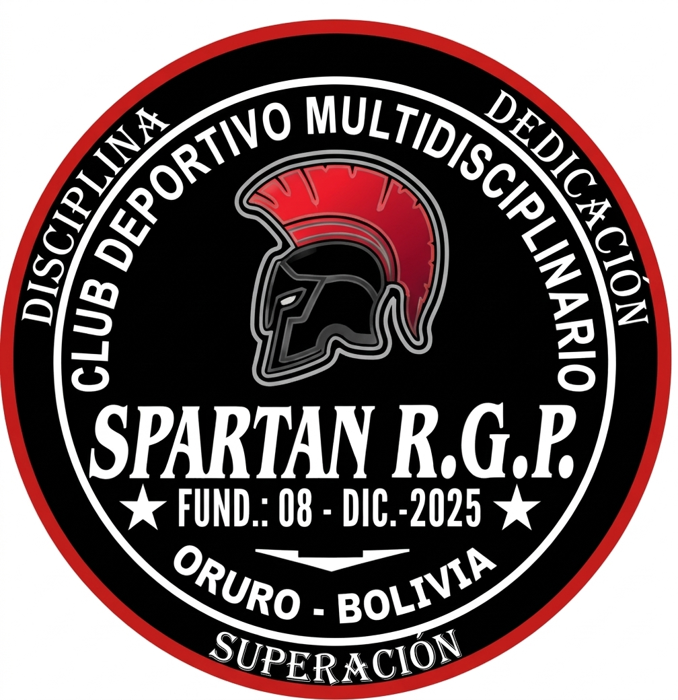

01. KYORUGUI
Es la modalidad de combate deportivo. Los atletas se enfrentan siguiendo las técnicas y reglas correspondientes a esta disciplina.

ORURO · BOLIVIA
TEAM SPARTAN R.G.P. · ORURO
El Taekwondo combina técnica, preparación física, disciplina y respeto. Conoce las modalidades deportivas y las categorías que aparecen en las publicaciones de nuestro club.
Spartan R.G.P. participa en actividades y competencias de Taekwondo. En este deporte se desarrollan habilidades técnicas, coordinación, concentración y preparación para afrontar nuevos desafíos.
Es la modalidad de combate deportivo. Los atletas se enfrentan siguiendo las técnicas y reglas correspondientes a esta disciplina.
Es la modalidad de formas. Consiste en ejecutar secuencias técnicas de ataque y defensa que requieren precisión, equilibrio y concentración.
En publicaciones del equipo relacionadas con competencias se han mostrado los siguientes grupos de edad. La categoría aplicable depende del reglamento y del evento deportivo.
Grupo de formación deportiva para los más pequeños.
6 A 7 AÑOSEtapa de aprendizaje y desarrollo de habilidades.
8 A 9 AÑOSParticipación deportiva según la categoría del torneo.
10 A 11 AÑOSGrupo de edad contemplado en las publicaciones competitivas.
12 A 14 AÑOSParticipación en eventos de acuerdo con la convocatoria.
15 A 17 AÑOSLas publicaciones de Spartan muestran participación en campeonatos y rankings de Taekwondo, incluyendo las modalidades Kyorugui y Poomsae. La preparación competitiva permite a los deportistas poner a prueba sus habilidades y representar a su club.
Consulta las edades admitidas, horarios, precios y requisitos.
SOLICITAR INFORMACIÓN